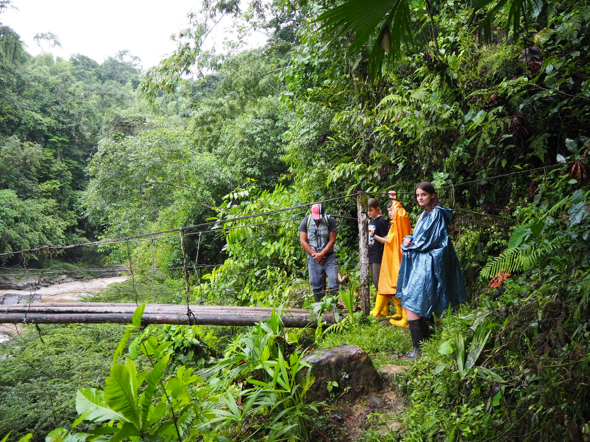
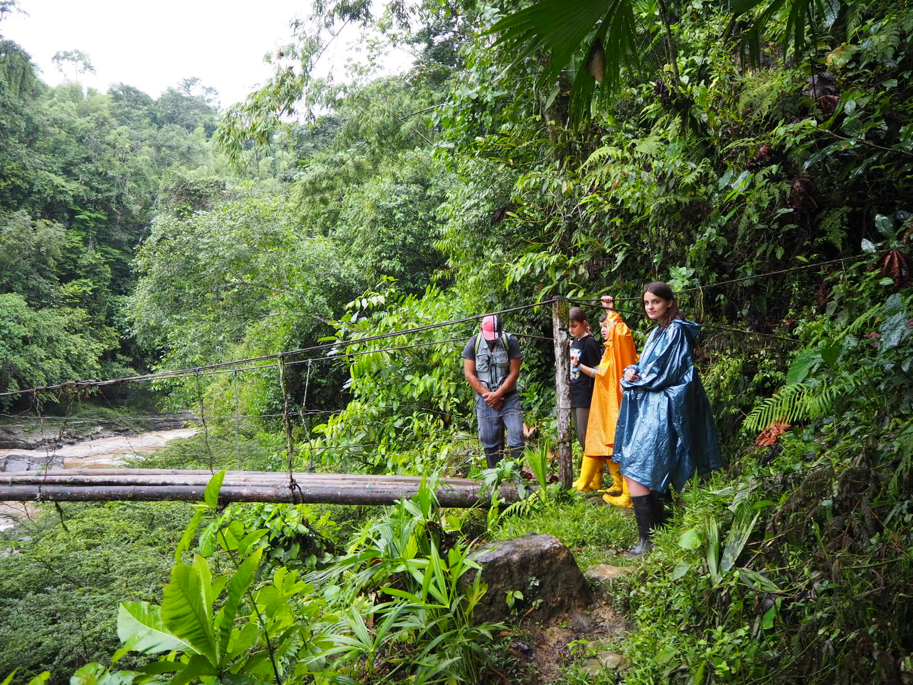

About Me
Hello! First things first — my name is Nicole Sofia Stott Lozano and I’m 20 years old. I was born on the 27th of August, 2004 in London, United Kingdom, where we lived for a while before moving to Sydney and then Singapore, eventually settling down in Madrid, Spain, where I spent most of my formative years. My father is British and my mother is Spanish, so I grew up fully fluent in both languages. I also have three half-siblings, an older sister and a younger brother. I completed my IGCSEs, including Photography and Drama, and my A Levels at Hastings School in Madrid. After graduating in 2022, I moved back to London to start my Bachelor of Science in Creative Computing at the Creative Computing Institute at UAL — which brings me to where I am today!
Growing Up
My longest-standing characteristic is my curiosity. Ever since I was a little girl, I’ve always felt the need to understand how everything works. This curiosity shaped my decision to pursue A Levels in Maths, Biology, Chemistry, and Spanish, as I wanted to explore both the logical and creative sides of learning. It also influenced the choices I made after graduation, knowing that technology is one of the most - if not the most - powerful tools of our time made me want to understand how it could be used to help shape a better future. Another important part of who I am is my creativity. Whether it was through Drama IGCSE, baking lessons, or my lifelong love of photography, I’ve always enjoyed finding ways to express myself and capture the world through my eyes. Music and reading have also been constant companions, providing both an escape and a source of inspiration, while also opening my mind and acting as endless wells of knowledge.
 


Now and The Future
Currently reaching the end of my degree, I’m incredibly thankful for the wide range of tools and skills I’ve gained from it. I’ve really enjoyed exploring the intersection of creativity and technology, and I’ve been particularly drawn to subjects like Human-Computer Interaction as it overlaps with UX/UI design, and web development. Along the way, I’ve also become increasingly interested in fields like DevOps, expanding these interests through courses such as IBM's DevOps for beginners on Coursera, as I find the idea of streamlining processes and ensuring seamless deployment both fascinating and essential in today’s fast-paced tech environment.
For my final project and thesis, I’m building a digital platform designed to help emerging artists connect with opportunities. The site includes features like VR-powered gallery spaces where users can curate and explore art in immersive environments, and an AR tool to preview artwork on their own walls. This project has allowed me to merge my technical knowledge with my passion for art, accessibility, and user experience, while exploring how technology can help democratise the art world.
I’ve also recently begun modeling, which has given me another perspective on the fashion industry — a world I’ve always been curious about, especially from the standpoint of branding, visual identity, and the systems behind it. Being on set has deepened my appreciation for the collaborative process behind visual campaigns and sparked a stronger interest in how creativity, media, and commerce intersect.
On a different note, I recently started a role as Social Media Manager at Crudo Cevicheria, which feels like a natural extension of my creativity. I’ve always had a deep interest in psychology and understanding human behaviour, and combining that with my degree plus my long-standing love for photography, has given me a unique set of tools for digital communication.
Psychology & Sociology
Building on my previous mention of psychology, the human brain has always absolutely fascinated me. I’m constantly trying to understand subjects like the subconscious and how human biology influences behavior. This curiosity naturally extends to sociology, as I’m drawn to exploring how societal structures shape human interactions. Books like The Dawn of Everything and The Selfish Gene have been particularly impactful—challenging everything I once believed to be true and reconstructing entirely new narratives. I love how these fields push me to question assumptions, rethink perspectives, and uncover deeper layers of understanding about both individuals and societies.
Hobbies & Passions
My passions span across creative and sensory experiences — from baking and photography to video editing and reading. I’ve always found joy in making things, whether that’s creating visual stories through my camera lens or experimenting with new recipes in the kitchen. Baking, in particular, has always been something I’ve shared with my mum — it’s our way of spending time together, creating comfort, and expressing care through food.
Photography and video editing have been natural extensions of my love for storytelling. I enjoy capturing fleeting moments and turning them into something meaningful — whether it’s a travel montage, a digital collage, or a short visual narrative. These hobbies have also sharpened my eye for detail and aesthetics, which feeds into my work in design and digital media.
When I’m not creating, I’m usually reading — especially books that explore psychology, culture, or speculative futures. I find stories, both fictional and real, offer incredible insights into how people think, feel, and navigate the world. Whether I’m flipping through a novel or editing a reel, I’m happiest when I’m engaging with ideas and making something that feels personal.
Some of my favourites
Movies: The Big Lebowski, Climax, Eternal Sunshine of the Spotless Mind
Music Artists: Claudio Montana, Metronomy, David Bowie
Books: The Selfish Gene - Richard Dawkins, A prayer for Owen Meany - John Irving, Invisible - Paul Auster
Colours: Olive, Pink, Navy
Travelling
Travelling has been a defining part of my life and one of my greatest passions. Having lived in multiple countries, spending summers between the traditional south of spain and the exotic island of bali, I’ve grown up surrounded by different cultures, languages, and perspectives. Each move has shaped how I see the world — from the easygoing spirit of Madrid to the fast-paced energy of London. My favourite part of travelling is getting to know people and their cultures on a deeper level — understanding the rhythm of everyday life, local traditions, and the little things that make each place unique, breaking down mental barriers and challenging ones perception of what may be 'right'. From the tribes in the amazonian river to travelling through Europe exploring all these unknown territories - to us, these are the moments that stay with me and continue to influence how I think, create, and connect.